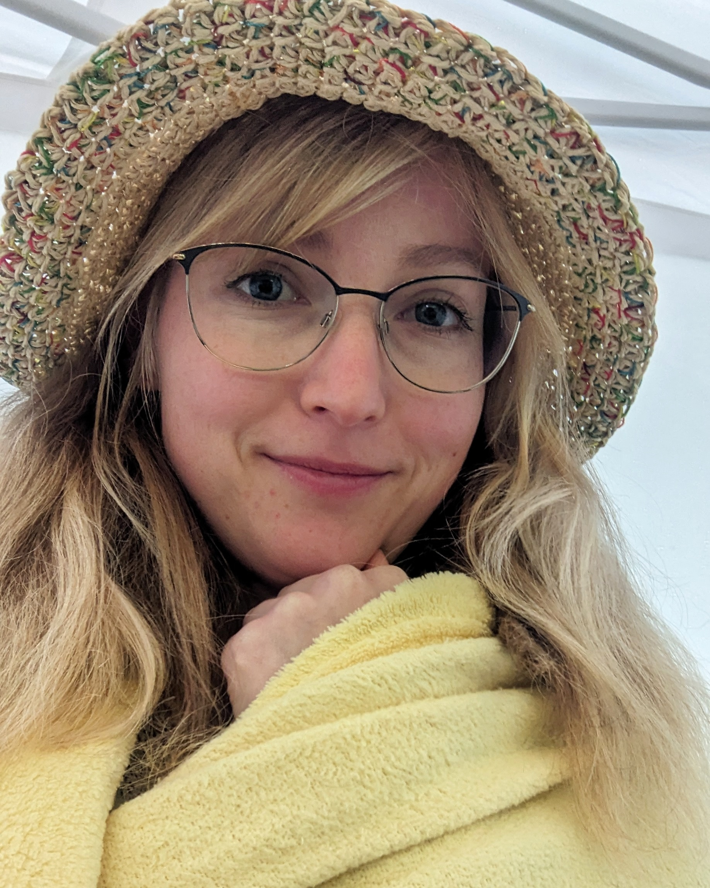

Ahoj!
Jsem Jana a navrhuji digitální produkty, které spojují funkčnost s čistým designem.
Během studia UX/UI jsem si prošla celým procesem – od výzkumu a wireframů až po kódování.
Hledám první UX/UI pozici, kde bych mohla rozvíjet své dovednosti a přispět k uživatelsky přívětivým řešením.